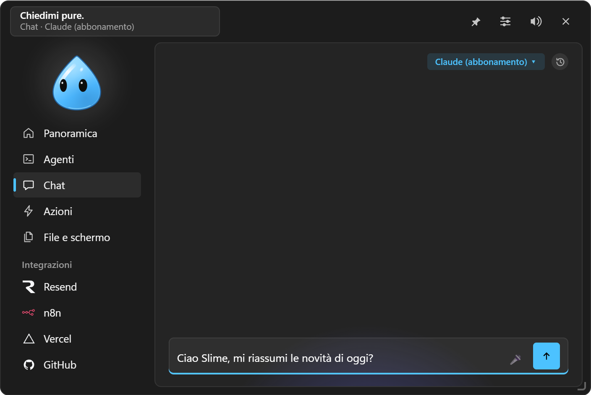
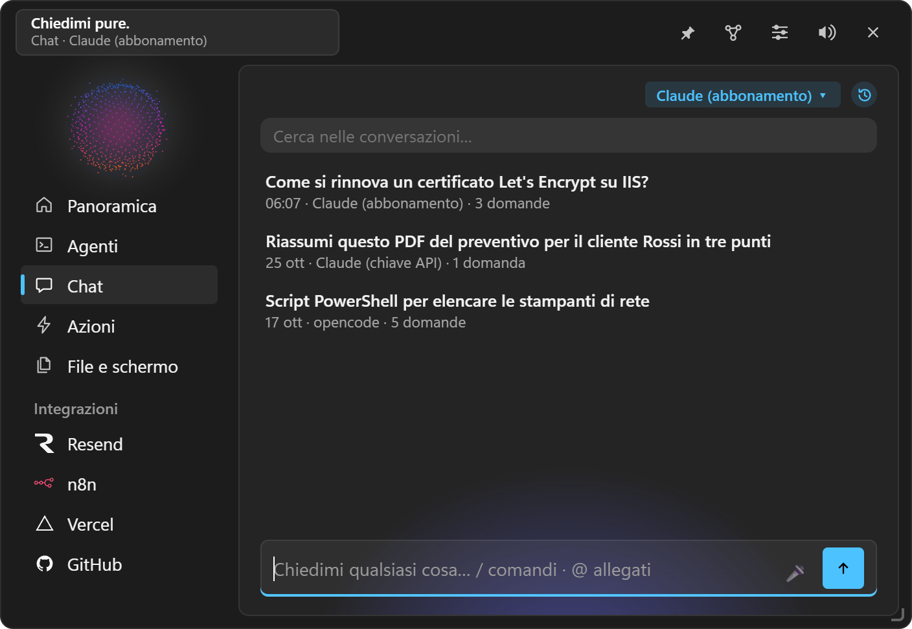

La chat
Scrivere, allegare, comandi con / e @, assistenti, dettatura, cronologia, seconda opinione.

#Scrivere
- Il campo va su più righe: Invio invia, Shift+Invio va a capo. Quello che stai scrivendo resta anche se riavvii. ↑ nel campo vuoto riprende l'ultima domanda.
- Le risposte sono in markdown: titoli, elenchi, tabelle, codice con Copia. Mentre il motore lavora vedi il ragionamento e gli strumenti usati.
- ■ Ferma interrompe la risposta in corso (e il permesso in attesa).
- Se sali a leggere, il testo che arriva non ti riporta giù: ↓ torna in fondo.
- Calcolatrice: scrivi
840 + 22%o15% di 840e il risultato compare subito, calcolato in locale. Invio lo copia, Ctrl+Invio chiede comunque alla chat.
#Sotto ogni messaggio
- Copia.
- Modifica (sulle tue domande): il testo torna nel campo e la conversazione riparte da lì.
- ↻ Rigenera (sull'ultima risposta).
- ⑂ Dirama da qui: una conversazione nuova che parte da quel punto; quella di prima resta intera nella cronologia.
- ⇄ Seconda opinione: un altro motore rilegge l'ultima domanda e la risposta e segnala errori, mancanze o rischi (oppure «va bene»). Il suo parere arriva anche al motore principale, che può correggersi.
#Allegare
| Come | Cosa |
|---|---|
| Ctrl+Alt+K | Il testo o l'immagine copiati |
| Ctrl+V nel campo | Immagini e file copiati in Esplora file (chip 📎) |
| Trascinare un file sull'isola | Allegato alla conversazione in corso, senza ricominciarla |
@appunti | Il testo o l'immagine copiati |
@finestra | La foto di una finestra aperta |
@vassoio | Un file del Vassoio |
| Trascinare il personaggio della chat su una finestra | Quella finestra come contesto (immagine, nome dell'app, titolo). Esc annulla |
| Riquadra e chiedi | Una zona dello schermo (vedi File e schermo) |
| Chiedi alla chat negli Appunti, nel Vassoio, in Notion | L'elemento scelto |
Le immagini vanno ai modelli che le leggono, i file di testo nel messaggio, i PDF a Claude.
#Comandi con /
Scrivi / e scegli dal menu (frecce, Tab o Invio):
| Comando | Cosa fa |
|---|---|
/nuova | Nuova conversazione |
/cronologia, /cerca | Conversazioni passate, anche per parole |
/ricorda … | Salva una nota in memoria senza passare dal modello |
/memoria | Apre la memoria |
/esporta | La conversazione in Markdown nel Vassoio |
/motore | Cambia motore per questa conversazione |
/oggi, /domani | La giornata: attività, appuntamenti, ticket |
/compito … | Affida un obiettivo a un compito |
/<azione> | Esegue un'azione rapida per nome (es. /backup-giornaliero) |
/<abilità> | Usa un'abilità |
/<assistente> | Conversazione nuova con un assistente |
Un /qualcosa che non è un comando va al motore come testo.
Modelli con campi: un'azione rapida di tipo «Chiedi alla chat» con {{cliente}} nel testo, scelta da /, va nel campo invece di partire; Tab salta da un campo all'altro.
#Assistenti
In Impostazioni → Chat → Istruzioni e memoria crei assistenti con nome, emoji, motore e istruzioni (per esempio «Revisore SQL» o «Traduttore tecnico»). Nella chat li chiami con /nome: parte una conversazione nuova sul loro motore, con il chip 🤖.
#Istruzioni
Impostazioni → Chat → Istruzioni: un testo detto alla chat all'inizio di ogni conversazione («Rispondi breve. Sono un tecnico, i miei clienti sono piccoli uffici…»). Fa parte del profilo, così ogni profilo può avere le sue.
#Dettatura
🎤 nel campo: clic per iniziare e per finire. Con un servizio di trascrizione scelto in Impostazioni → Telegram → Vocali, registra e trascrive con quello; senza, apre la dettatura di Windows (Win+H), locale e gratuita.
#Cronologia
L'orologio in alto nella chat mostra le conversazioni di prima (fino a 100, solo su questo PC), con data, motore e ricerca. ✎ (o un doppio clic sul titolo) la rinomina: Invio salva, Esc annulla, un titolo vuoto torna alla prima domanda. 📌 la tiene in cima. Un clic ne riapre una sul suo motore e la continui. Con i motori via API riprende esattamente da dove era; con l'abbonamento e con opencode la conversazione viene passata come testo. Impostazioni → Chat → Cronologia la svuota o la spegne (spegnendo anche il diario della memoria).

#Chiedere da altri posti
- Dal campo in alto dell'isola con Ctrl+Invio.
- Da Telegram, con una conversazione sua (vedi Telegram);
/riprendicontinua lì l'ultima conversazione dell'isola. - Da un'azione rapida «Chiedi alla chat» o dal menu Win+Alt+A sul testo selezionato.